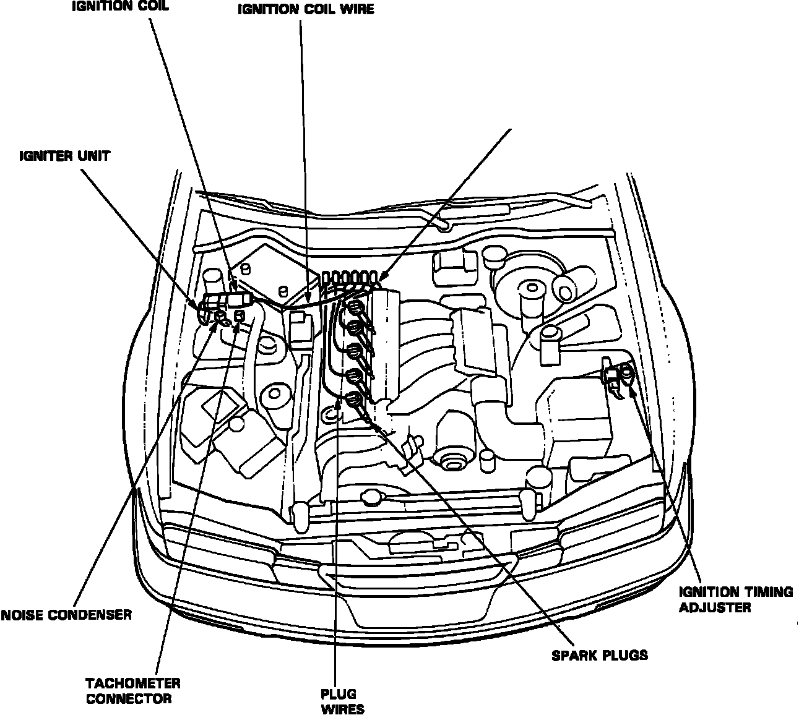

Ignition System: Locations
Component Location Index:

CYL/CRANK SENSOR
Behind camshaft pulley, front of cylinder head.
ELECTRONIC CONTROL UNIT (ECU)
Passenger footwell, under carpet.
IGNITER UNIT
Passenger side fender panel, on shock tower.
IGNITION COILS
Passenger side fender panel, next to igniter unit on shock tower
IGNITION TIMING ADJUSTER
Front of left shock tower.
RADIO NOISE CONDENSER
Passenger side shock tower, near the ignitor unit.
TACHOMETER CONNECTOR
On the passenger side shock tower, next to ignition coil.
Timing Mark:

IGNITION TIMING MARKS
Front of engine, on cam belt covers.